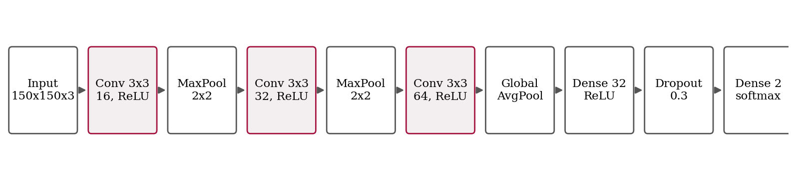
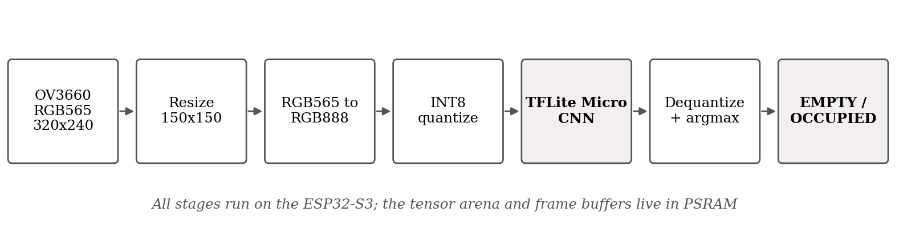
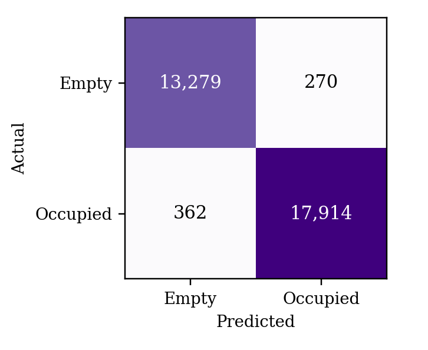
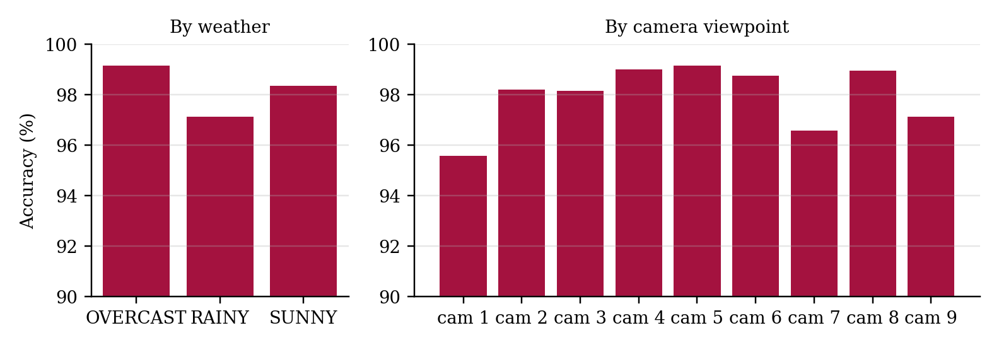
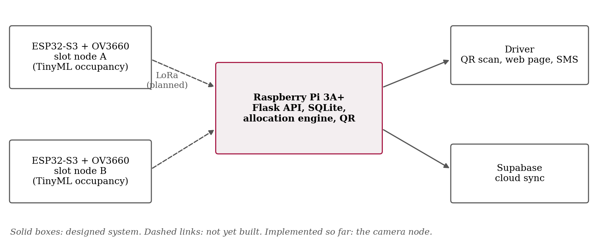

Finding a free space in a busy lot wastes time and fuel, and the queue that builds at the entrance makes the problem worse for everyone. Many campuses and malls already have the physical layout for a smarter system; what they lack is a cheap way to know which slots are actually free.
The usual answers each have a cost. Per-slot ultrasonic or infrared sensors are accurate but need wiring and maintenance at every bay. Camera systems need far fewer devices, but published designs typically lean on a Jetson-class board or a server running a detector such as YOLO, and cloud-hosted versions stop working when the network does. Our goal was narrower and more practical: put the decision on the camera node itself, using an inexpensive off-the-shelf microcontroller board, and see how accurate it can be.
This paper makes three contributions:
All code, the model, the sample outputs and the demo videos are in the project repository (Section VII).
Sensor-based systems. A common design reads one infrared or ultrasonic sensor per slot with a microcontroller and forwards the result to a cloud service. A GIEST 2024 prototype combines IR sensors, an ATmega2560 and an ESP32 that reports to the Blynk cloud, and adds LED strips for indoor guidance [1]. Lubis et al. pair ultrasonic sensors and ESP32 boards with Firebase and then use Faster R-CNN with EasyOCR to check that a reservation matches the plate and slot marker; they report 86% detection accuracy and a 2.7 s average inference-plus-extraction time [2]. These systems work, but wiring grows with the number of slots.
Vision on edge hardware. Rajesh et al. monitor a lot with one infrastructure camera, run the detector on an edge computer to avoid latency, and guide drivers to the nearest free spot [3]. Kim et al. run SSD-MobileNetv2 on a low-cost edge device fed by several IP cameras and add a dual-trigger scheme, periodic plus a parking-space-mask trigger, so the model runs only when the scene changes; they report 0.32 s per frame and an F1-score of 0.9848 over a four-month field test [4]. Alymani et al. combine plate recognition at the gate with slot cameras and infrared sensors [5]. Our work sits at the smaller end of this range: a model that fits on a microcontroller rather than an edge computer.
Allocation. Beyond detection, some papers decide which slot to give a driver. Thomas and Kovoor use a genetic algorithm to pick a parking region and an autonomous trolley to park the car [6]; Sakib et al. propose an eco-friendly management scheme in which allocation accounts for emissions and driver priority [7]. We take inspiration from these when describing our planned allocation score in Section VI.
Datasets and TinyML. PKLot [8] and CNRPark+EXT [9] are the two public parking-occupancy datasets we know of with per-space labels. We use CNRPark+EXT because its 150×150 patches are already cropped per slot and labelled. For deployment we rely on TensorFlow Lite Micro [10] and on the integer-only quantization scheme of Jacob et al. [11].
| Work | Sensing | Compute at the node | Stated limit / difference |
|---|---|---|---|
| GIEST 2024 [1] | IR per slot | ATmega2560 + ESP32 | Wired sensor per slot; no vision |
| Lubis et al. [2] | Ultrasonic + phone photos | ESP32 + server-side Faster R-CNN, OCR | 86% detection, 2.7 s; needs uploaded photos |
| Rajesh et al. [3] | One infrastructure camera | Edge computer, YOLO-class detector | Far heavier than a microcontroller |
| Kim et al. [4] | IP cameras | Edge device, SSD-MobileNetv2 | 0.32 s/frame, F1 0.9848 (field) |
| This work | OV3660 on the board | ESP32-S3, 33 KB INT8 CNN | ~497 ms/image; CNR-EXT only, no campus field data yet |
The node is an ESP32-S3-WROOM-1 N16R8 development board (dual-core 240 MHz, 8 MB PSRAM, 16 MB flash) with an OV3660 camera module attached directly to the board. We first bought a generic ESP32-S3 DevKit and discovered that it has no flat-cable camera connector, so the ESP32-CAM sensor could not be reused; switching to a board with the camera built in fixed this. The internal SRAM is only about 512 KB, which matters later.
Fig. 1 shows the CNN. It has three 3×3 convolution blocks with 16, 32 and 64 filters, two max-pooling layers, global average pooling in place of a flatten layer, a 32-unit dense layer, dropout of 0.3 and a two-way softmax. The total is 25,730 parameters, about 100.5 KB as 32-bit floats. In place of a flatten layer, the last convolution feeds a global average pooling layer.

CNRPark+EXT provides 150×150 RGB patches, one parking space per patch, labelled 0 (empty) or 1 (occupied), with predefined train, validation and test lists. The lists contain 94,493, 18,647 and 31,825 images respectively. To keep early experiments quick we trained on a class-balanced random subset of 20,000 training images (10,000 per class, seed 42) and evaluated on the untouched validation and test lists. Training used Adam (learning rate 0.001), batch size 32, up to 20 epochs with early stopping on validation loss (patience 4), and light augmentation—rotation up to ±0.03 turn (about ±11°), translation and zoom up to 3% and brightness change up to 10%—chosen to mimic a camera that has drifted slightly. Pixels are scaled to [0, 1].
The Keras model reached 98.11% on the test list in our training run; Section IV re-measures it (slightly differently, because of image-loading details). A 96×96 variant trained the same way reached 98.25%, but we deployed the 150×150 model because its input matches the stored patches and the memory cost was acceptable.
We used post-training full-integer quantization with the TensorFlow Lite converter. A representative set of 500 randomly chosen patches calibrated activation ranges; input and output tensors are INT8. A pixel x in [0, 1] is stored as q = round(x/s) + z with the input scale and zero point read from the model, and the two outputs are converted back with x = (q − z)s before taking the larger. The result is a 34,040-byte file (33.24 KB), about a third of the float size. The calibration set was drawn from the full patch folder without excluding test images; it is only used to set ranges, not to train, but we note it for completeness.
The model is embedded in the firmware as a C array and executed with TensorFlow Lite Micro using a handful of operators (convolution, pooling, mean, fully connected, softmax, reshape, quantize and dequantize). Fig. 2 shows what happens at runtime. This is where most of our debugging time went. The camera delivers RGB565 frames at 320×240; the training images were 8-bit RGB, so each frame is resized to 150×150 and every pixel expanded to RGB888 by hand before quantizing. The tensor arena is 600 KB and is placed in PSRAM; our first attempt in internal RAM failed with a request for 469,136 bytes against about 151,000 available. An old community TensorFlow library also failed to compile against the newer API, so we switched to Espressif’s own TFLite Micro port.

For the demo the board captures and classifies one frame every 30 s and serves the result from its own Wi-Fi access point at 192.168.4.1: the latest image, the label, the two class probabilities, and capture and inference times.
We ran the float Keras model and the INT8 TFLite model (with the same quantize-run-dequantize steps as the firmware) over all {{n}} test patches. Table II shows that quantization cost very little: the INT8 model scores {{int8_acc_pct}} against {{float_acc_pct}} for float, and the two models agree on {{agree_pct}} of patches. Precision, recall and F1 for the occupied class are {{prec_pct}}, {{rec_pct}} and {{f1_pct}} (Fig. 3).
| Model | Size | Accuracy |
|---|---|---|
| Keras float32 | ~100.5 KB | {{float_acc_pct}} |
| TFLite INT8 | 33.24 KB | {{int8_acc_pct}} |
| Float/INT8 agreement | – | {{agree_pct}} |
Errors of the INT8 model: {{fp}} empty patches called occupied ({{fpr_pct}} of empty) and {{fn}} occupied patches called empty ({{fnr_pct}} of occupied).

CNRPark+EXT contains sunny, overcast and rainy days and nine camera viewpoints. Fig. 4 splits the INT8 accuracy by both. {{weather_sentence}} {{camera_sentence}} This is still the same dataset family the model was trained on, so it says little about a completely new lot.

Our guide asked that the system tolerate a camera that moves slightly with wind or maintenance. We could not physically bump a camera hundreds of times, so we applied synthetic perturbations to a fixed random subset of {{robust_n}} test patches and re-ran the INT8 model: a 10-pixel horizontal or vertical shift, a 5° rotation, a 10% zoom-in crop, and brightness scaled by 0.6 and 1.4. Table III gives the results. {{robust_sentence}}
| Perturbation | Accuracy | Change |
|---|
On the ESP32-S3 a classification takes about 497 ms and is nearly constant from frame to frame, because the network does the same arithmetic every time. The first camera capture after boot takes about 300 ms while the sensor settles, and later captures about 7 ms. The model plus runtime fit comfortably: one of our test sketches used 29% of program storage and 53% of dynamic memory with a 150 KB arena in internal RAM (it later moved to PSRAM). Compared with the 0.32 s per frame that Kim et al. report on a larger edge device [4], half a second on a microcontroller is acceptable for a status that changes over minutes, and the dashboard refreshes only every 30 s anyway.
We would rather list what is still wrong than have a reader find it.
The numbers are benchmark numbers. {{int8_acc_pct}} describes performance on CNRPark+EXT patches. We have not yet collected and labelled a set from our own campus lot, so we cannot claim that accuracy for our deployment. Fig. 5 shows deployed-model predictions on sample patches; campus photos are in the repository but were used only for trial runs.
Whole frame instead of slots. The model learned from patches that each show a single space, but the demo firmware resizes the entire 320×240 frame to 150×150. In practice, people and other objects in view were sometimes labelled occupied. Cropping a fixed region of interest per slot before inference is the obvious fix, and we expect it to matter more than any change to the network. A temporal rule, such as requiring two or three identical predictions in a row, would also steady the output.
Training-data balance. The training subset contains cars and empty ground but no people, animals or luggage, so the model has no reason to call those “empty”. Whether they should count as occupied is a policy choice we still need to make and label for.
Power. The dashboard worked when the board was plugged into a laptop but not reliably from a power bank, which points to a supply or brown-out reset problem rather than a software one. We have not isolated it yet.
Synthetic perturbations and tilt. Shifting or rotating a patch is not the same as moving a real camera, which changes perspective and what the patch contains. Table III is a sanity check, not a substitute for field testing. The sharp drop under rotation is the result that worries us most, because wind-induced tilt is exactly the case our guide described. Retraining with rotated inputs that keep their borders, and testing on real tilted captures, are priorities.
The occupancy node is the foundation; the rest of the system is designed but not yet implemented, and we label it that way deliberately. Fig. 6 shows the intended architecture: several camera nodes send compact occupancy vectors over LoRa to a Raspberry Pi 3A+ that stores state in SQLite, generates a dynamic entry QR code, assigns a slot, sends the driver a web page and SMS, and syncs to a cloud database when a connection is available.

For each free slot s the allocation engine will compute
and choose the slot with the lowest score. Here De and Dl are normalised distances to the entrance and to the nearest lift, ρr is the occupancy ratio of the slot’s row, Tr counts recent allocations in that row, and the weights sum to 1. The last term stops consecutive cars being sent to the same row, which is what causes congestion inside a lot. To catch drivers who park in the wrong place we plan a time-window check: when a slot is assigned the system expects it to become occupied within a few minutes; if a different, unassigned slot fills instead, the entry is matched to it by timestamp and the driver is asked by SMS to confirm. These ideas are not yet evaluated, and we make no accuracy claims about them.
The repository contains the firmware sketches, training and conversion scripts, the INT8 model, the C array, 60 sample patches, the demo videos, and two scripts: demo/run_demo.py regenerates the sample outputs and the full-test metrics, and demo/analysis.py regenerates the float-versus-INT8, weather, camera and robustness tables in this paper. The repository is at github.com/ballsycodes/Automated-Slot-Allocated-Smart-Parking-System.
A 33 KB INT8 convolutional network is enough to classify parking-slot patches with about {{int8_acc_pct}} accuracy on a public benchmark, and an ESP32-S3 can run it in roughly half a second without any server. Quantization cost almost nothing in accuracy, and the model tolerated small synthetic shifts and brightness changes, although a 5° rotation cut accuracy sharply. The distance between that and a working parking system is still real: per-slot cropping, retraining on our own lot, resolving the power issue, and building the LoRa, allocation and notification layers. Those are our next steps, in that order.
We thank our guide, Dr. R. Karthi, for pushing us to ask what happens when the camera moves, and the CNRPark+EXT authors for releasing their data.